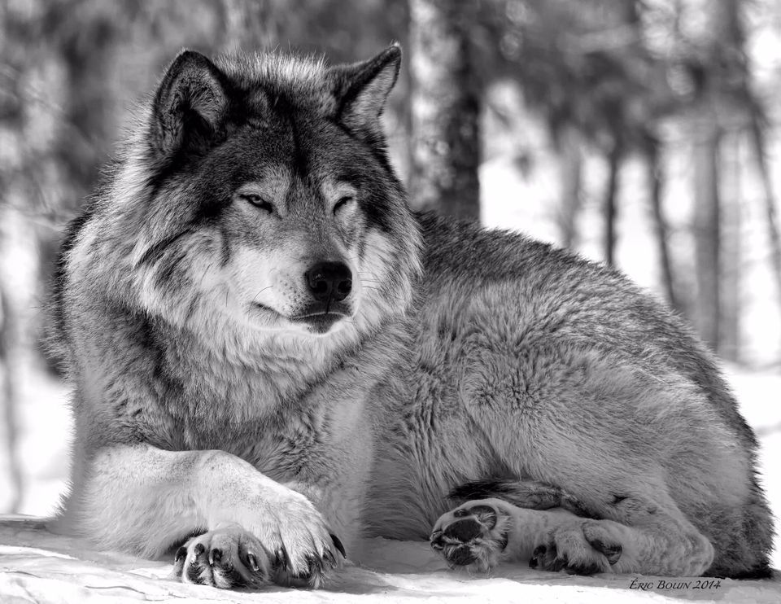

BY THEIR ACTIONS THEY WILL GUARD THE PEACEFUL WAYS OF FREEDOM, THEIR VISION HELD STEADY WITHIN THE HONOUR BORN OF THEIR COURAGEOUS HEARTS. YET THEIR NIGHT VISION, THEIR SHAPE-SHIFTING IN THE SHADOWS, THEIR FIERY PASSION FOR THE ONE LIFE, WILL BE FEARED BY ALL FOR A LONG TIME TO COME.
PATROLLING THE CUSPS OF THE DREAM, THEY WILL STAND GUARD AT THE PORTALS OF THE OTHER WORLD WITH THE STEADY PIERCING GAZE OF EVER-WATCHFUL EYES. WITH WARNING GROWL AND FANGS BARED IN FEARFUL SNARL THEY WILL KEEP OPEN THE GATEWAY INTO THE WORLD OF LIGHTS. DARTING FROM SHADOW TO SHADOW, THEY WILL GUIDE THE WEARY SEEKER TO THE THRESHOLD OF THE WORLD OF TRANSMUTATION.
EVER FAITHFUL TO THE TRUST BESTOWED IN THEM WILL BE THESE HOUNDS OF THE UNIVERSE, AND THEY SHALL BE KNOWN AS THE WOLF PEOPLE. IN THEIR HEARTS THEY SHALL CARRY ALWAYS THE VAGUE MEMORY OF A BYGONE WORLD, AN ORANGE-RED SUN WHICH WAS ONCE TO MAN HOME, WHICH WAS ONCE BOTH HIS GLORY AND HIS HONOUR.
BY DAY THEY SHALL FLEE THE ABOMINATIONS OF HU-MAN MADNESS, AT NIGHT THEY SHALL LOOK UPON THE FAINT LIGHT OF THE MOON AND CRY OUT THEIR ANGUISH OVER A FREEDOM LOST, A SPEAR AND A SWORD FORGOTTEN. WITHIN EVERY FIBRE OF THEIR BEING THEY SHALL NURTURE FOR EVER THE ECSTASY OF HOPE AND OF FREEDOM.
BRED BEFORE THE GREAT RIFT, THESE HOUNDS OF ATL FOUGHT ALONGSIDE THEIR BROTHERS IN THE WAR OF THE HEAVENS. YES, FOUGHT WELL! BUT ALAS! FOUGHT WITH THE FIERY ZEAL OF A FANATICISM THAT WAS BOTH THEIR INVINCIBLE STRENGTH AND ALSO THEIR GREATEST WEAKNESS - A WEAKNESS THAT SHALL CAUSE OTHERS TO FEAR THEM, SO THAT THESE FAITHFUL HOUNDS THAT ONCE WERE THE HUNTERS, SHALL BECOME THE HUNTED.
IN THEIR STRUGGLE FOR SURVIVAL THEY WILL LEARN WHAT IT IS TO DANCE THE EDGE, TO BLEND SOFTLY WITH THE SHADOW, TO CHOOSE THE STEALTH OF THE NIGHT FOR TRAVEL, THE WARMTH OF THE SOUTHERN WIND FOR COMPANION.
BUT THEIR WEAKNESS WILL AGAIN BECOME THEIR STRENGTH, FOR IN TIME IT WILL TRANSMUTE INTO THEIR INSTINCT FOR SURVIVAL, THEIR LOYALTY IN KINSHIP, THEIR LOVE OF FREEDOM.
